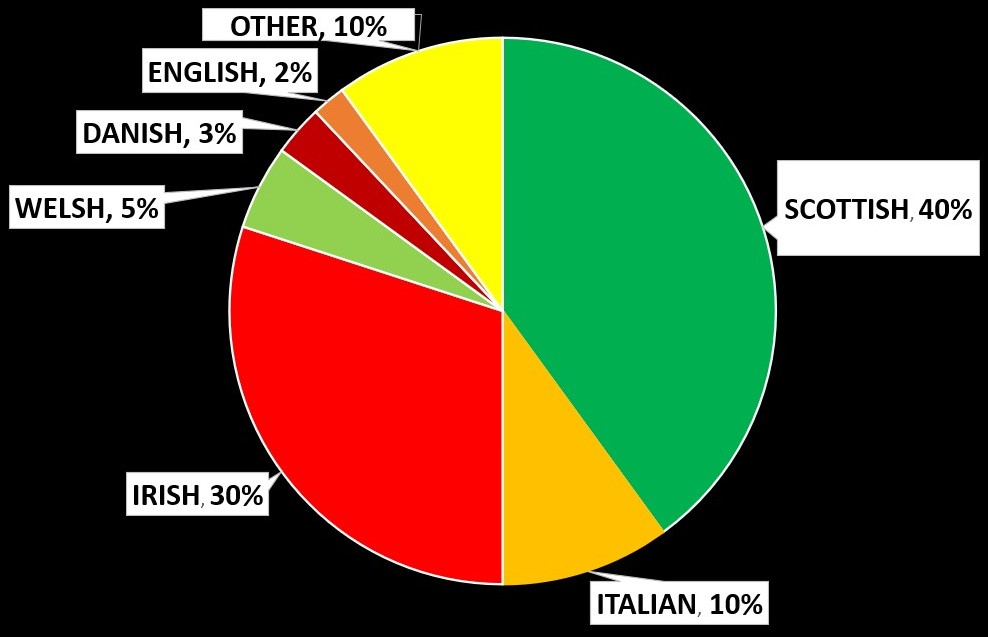

- DNA Report -
The following section contains a pie chart desribing my own genetic makeup. The chart shows the approximate proportions of my own dna that can be traced to different countries in the world. As well as a table that breaksdown what percent each region was inherited from either my father or mother. Suprisingly there is more Scottish then Irish in my dna.

| Region | Father | Mother | Me |
|---|---|---|---|
| Scottish | 60% | 40% | 40% |
| Italian | 0% | 40% | 10% |
| Irish | 20% | 0% | 30% |
| Welsh | 5% | 0% | 5% |
| Danish | 5% | 0% | 3% |
| English | 0% | 10% | 2% |
| Other | 10% | 10% | 10% |